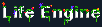

Target FPS: 60
About
Editor
World Controls
Evolution Controls
Statistics
The Life Engine is a virtual ecosystem that allows organisms to reproduce, compete, and evolve.
Each organism is made up of different colored cells. Hover over each color to learn what it does.
Cell count:
Auto reset count:
Total Population:
Number of Species:
Most Populous Species:
Largest Organism Ever:
Average Mutation Rate:
Storms:
Seeds: